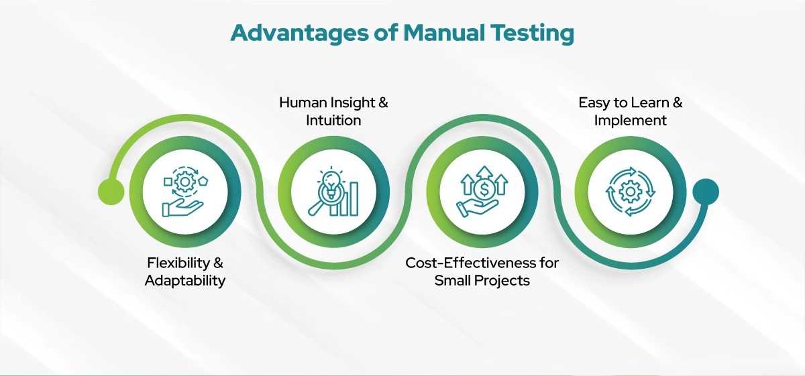

Manual testing is the process of manually checking software applications to ensure they behave as expected. As a QA specialist, I have strong experience in functional, UI, usability, and exploratory testing across both web and mobile platforms.
While manual testing focuses on human interaction, I use the following tools to organize and report:
I’ve worked on multiple projects where manual testing played a critical role. From testing health-related mobile apps to cross-browser validation of marketing websites, I ensured quality at every level. My work helped teams identify edge case bugs, fix inconsistencies, and release stable builds with confidence.
Here are a few of the projects I contributed manual testing to:
While automation is growing fast, manual testing is still essential — especially for usability, design flaws, and human-centric flows. It allows testers to think like real users and catch issues automation might miss.
With my manual testing skills, I ensure products deliver smooth, bug-free, and user-friendly experiences. I combine attention to detail with real-world testing approaches to deliver high-quality results.
← Back to Home